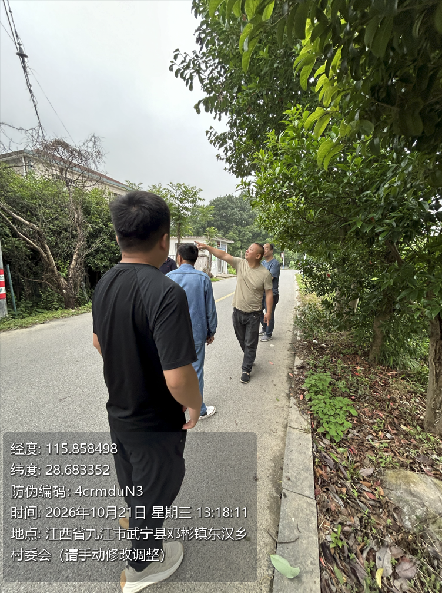

电脑端批量处理
Windows 电脑安装后即可使用，直接导入整个文件夹，不限制图片数量，一键给大量旧照片加水印。
Windows 电脑工具 · 批量处理
伟财工程水印相机专为工程资料员打造：导入存量照片，设置一个基准时间与经纬度，工具便能为每张照片生成不同的时间和不同的定位信息，统一补做工程水印，直接生成可归档的成品图。
Windows 电脑端工具 · 支持整文件夹批量处理

现场漏拍水印、历史照片没统一格式？
把存量照片一次整理成 标准化工程资料
核心能力 · 时空信息批量生成
填写基准时间、基准经纬度和工程信息后，伟财工程水印相机会在你设置的范围内，为每张照片分别生成不同的水印时间与不同的经纬度。
例如：设定时间范围与坐标周边 50 米范围后，每张成品照片都会获得不同的时间、不同的经纬度；范围大小由你自行控制。
为资料员的事后补资料而做
Windows 电脑安装后即可使用，直接导入整个文件夹，不限制图片数量，一键给大量旧照片加水印。
工程名称、施工部位、施工内容、经纬度、地址、海拔、时间等字段都能自定义，样式按需配置。
基于给定时间和经纬度，在自定义时间范围、坐标周边自定义米数范围内，分别生成每张照片不同的时间与定位信息。
电脑端工作台
安装电脑工具后，填写项目信息，一键导出带水印的成品图。
三步完成补资料
适配工程现场
从土建、市政、公路、水利、电力，到装修巡检、隐蔽工程验收、材料进场留痕和监理影像归档，凡是需要把照片补齐工程上下文的地方，都可以直接使用。
给存量照片补齐工程上下文